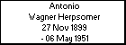
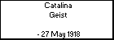
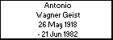
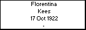
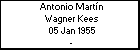

l i n k s
Children with:
Claudia Beatriz Dome Perroni
Siblings:
Eduardo Antonio Wagner Kees
Raul Antonio Wagner Kees
Children:
Jacqueline Wagner Dome
Christian Wagner Dome
Angi Wagner Dome
Erika Wagner Dome
Mary Wagner Dome
Antonio Martín Wagner Kees
Born: 05 Jan 1955, Cañuelas - Pcia.Bs.Aires - Argentina
Married to
Claudia Beatriz Dome Perroni
Generated by
GenDesigner 2.0 beta 3.6